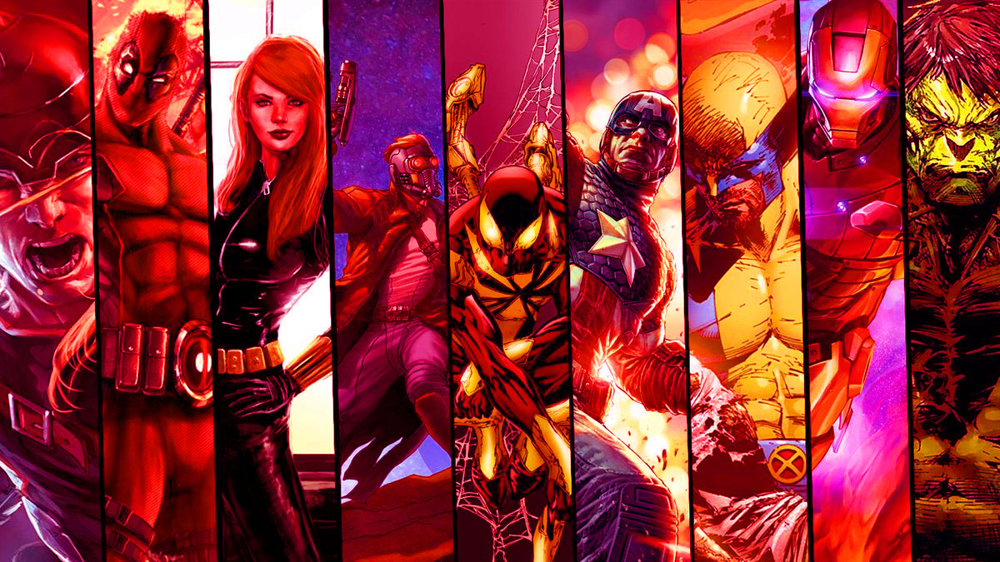
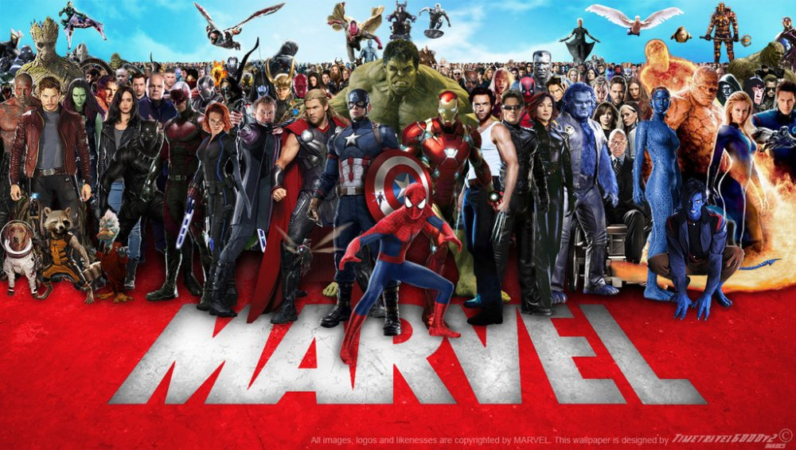
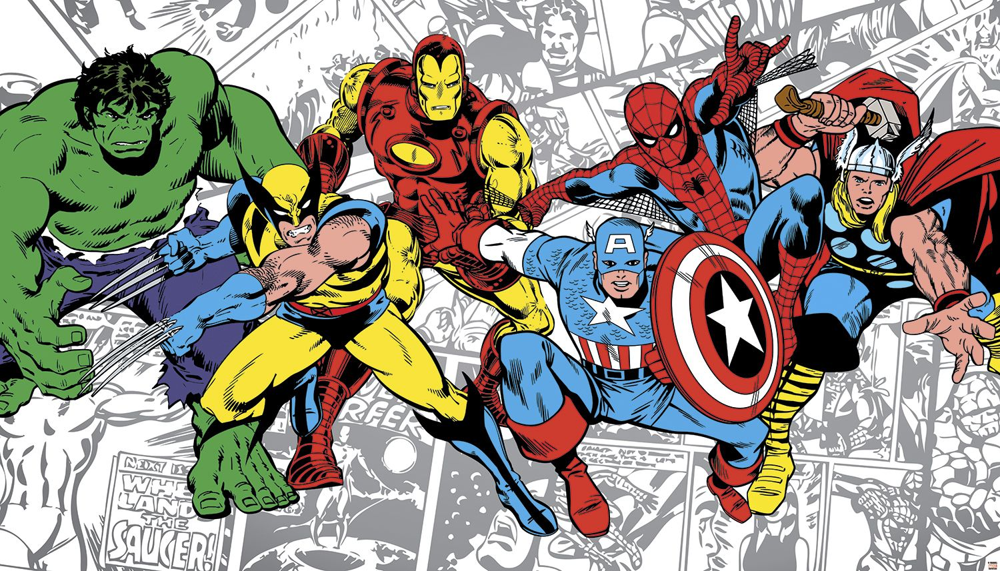
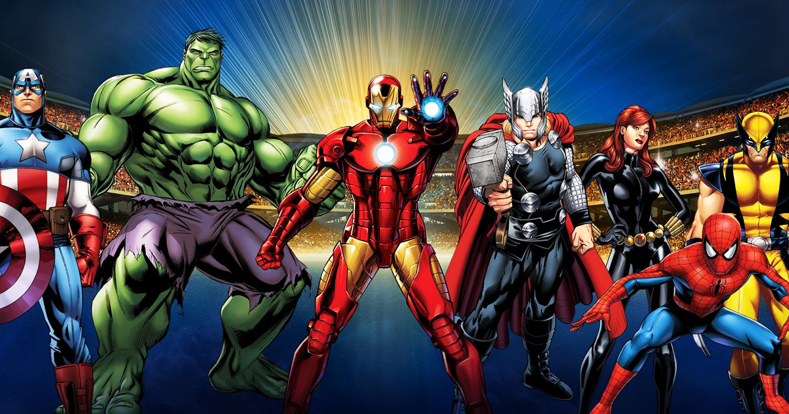
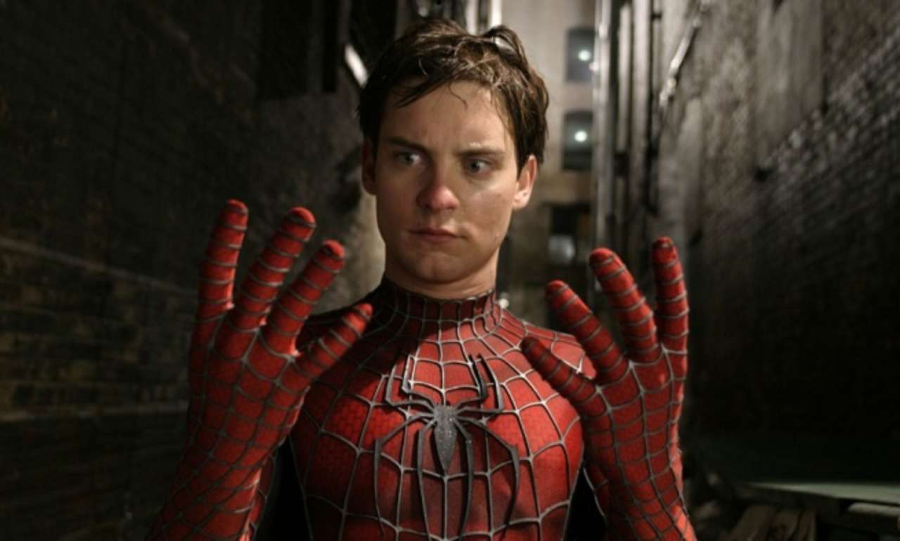

- 
- 
- 
- 
Здесь вы узнаете о способностях и жизни героев marvel, рады приветствовать вас на нашем сайте
Сайт включает в себя вселенную marvel, вы узнаете о способностях различных героев.
Если вам интересно узнать о способностях человека паука, способностях халка, железный человек и прочие герои
В таком случае, этот сайт именно для тебя.
Что включает в себя Marvel Universe? И что вообще подразумевается под вселенной? Мультиверс является миром, где герои разных комиксов встречаются в одной истории. Отличительная особенность Вселенной Marvel заключается в том, что большинство событий происходят на Земле. На сегодняшний день количество персонажей: героев, злодеев, Богов, пришельцев, спецагентов и гражданских — перевалило за пятьдесят тысяч. По численности жителей Вселенная Марвел приравнена к среднему городу Америки.
Реалистичность – главная черта марвеловских персонажей и историй. В отличие от DC Comics редакционная команда Марвел любит создавать героев с недостатками, чтобы подчеркнуть их сходство с реальными людьми и вызвать чувство эмпатии у поклонников.
Мир вымышленных героев Стена Ли включает в себя множество интересных форм жизни. Мутанты, вампиры, инопланетяне, скандинавские боги, жертвы токсичных мутагенов один за одним вступают в борьбу со злом и спасают мир от разрушения.
На сегодняшний день наиболее популярными героями Marvel по версии IGN считаются Человек-паук, Росомаха и Халк. В этот же список входит Капитан Америка, не смотря на свою подпорченную биографию. А среди женщин-героев популярностью пользуются Джина Грей и Черная Вдова ( во многом благодаря циклу фильмов о Мстителях).
Создавать антагонистов для таких «испорченных» супергероев, как Железный Человек, Блейд или Росомаха, не так-то просто. Но Дому идей не нужны легкие пути. Нарушая негласный закон создания комиксов, они придумывают настолько харизматичных злодеев, что публика влюбляется в них с первого взгляда.
Локи, Гельмут Земо, Стервятник, Эго являются очень глубокими, умными злодеями, мотивы которых хорошо проработаны и понятны зрителю. А суперзлодейки Эмма Фрост, Электра и Женщина-кошка давно превратились в культовые фигуры современности. Каждый раз антагонисты вступают в ожесточенную схватку с героями и антигероями Marvel, порождая все новые и новые увлекательные истории.
Жмякай на интересного тебе героя!


.jpg)
супергерой серии комиксов компании Марвел, один из самых популярных борцов с преступностью во Вселенной «Земля-616». Созданный в 1962 году Стэном Ли и Стивом Дитко, персонаж представляет собой юношу, обладающего супернавыками. Свою силу Питер Паркер получил в результате укуса паука, ранее попавшего под радиационное излучение. Благодаря мутации, произошедшей в течение нескольких часов после укуса, Паркер приобрел частичные способности арахнида. Так, он стал способен лазить по стенам, подобно пауку, обрел сверхчеловеческую силу, ловкость и рефлексы. Вдобавок он получил способность «Паучье Чутье», которая предупреждает его о возможных угрозах за несколько мгновений до наступления опасности. Обретя новые способности, Паркер взял себе псевдоним «Человек-Паук» и стал костюмированным супергероем. На протяжении своих долгих приключений Человек-Паук сражался с множеством различных злодеев вселенной Марвел и участвовал в основных событиях планеты. Он состоял в браке с Мэри Джейн Уотсон, работал в газете Дйли Бьюгл, был школьным учителем и наконец открыл собственную компанию, развившуюся до международного уровня. Питер Паркер является одним из умнейших людей планеты (его IQ больше 250). Он создает множество различных приспособлений, помогающих в борьбе с преступностью, а также периодически помогает другим гениям (вроде Рида Ричардса и Хэнка Пима) в борьбе с угрозами мирового масштаба. На протяжении развития персонажа, Человек-Паук подвергается мутациям, меняющим и усиливающим его суперспособности. Точный уровень силы Паркера неизвестен. Однако точно известно, что Паук практически всегда сдерживает собственную мощь, чтобы не убить противника с нескольких ударов. В его арсенале находится несколько ужасающих суперприемов, которые он использует только при потере контроля над собой (однажды, с помощью своих «прилипающих» конечностей он сдирал куски кожи с лиц своих противников).
Человек-паук или Спайдермен ( Питер Бенджамин Паркер , англ. Spiderman ) — супергерой комиксов компании Marvel , выдуманный Стэном Ли и Стивом Дитко . Впервой Человек-паук возник в серии комиксов The Amazing Fantasy ( «Удивительные фантазии») № 15 в августе 1962 года. С этих пор он существует одним из самых известных и коммерчески удачных супергероев. Теперь он возникает не лишь в комиксах, но и в кинофильмах, на телевидении, на одежде, в видеоиграх и в облике игрушек.
Сверхчеловеческая
Гений в определённых областях, имеет средние навыки троллинга
Имеет десятилетний опыт в борьбе со злодеями, мастер рукопашного боя и восточных единоборств, когда Питер сражается, он имитирует паука, тем самым его движения становятся непредсказуемыми
Веб-шутеры, контейнеры с паутиной, фонарик, встроенный в пояс, радиомаяки
Сверхчеловеческие сила, скорость, стойкость, выносливость, ловкость, чувство равновесия - Питер обладает всеми человеческими способностями, только в разы более сильными. Он способен поднять несколько тонн, обогнать автомобиль на своих двоих, использовать свое тело на максимум в течение нескольких часов не уставая, без проблем принимать на себя удары, которые убили бы обычного человека, балансировать на абсолютно любой поверхности и тому подобное.
Паучье Чутьё - Человек-Паук обладает экстрасенсорным чувством, заранее предупреждающим его об опасности покалыванием в задней части черепа. Это позволяет ему избежать большинства ранений. К сожалению, иногда сильные эмоции Питера мешают ему распознать сигналы Паучьего Чутья. Сигналы могут поступать как непосредственно в момент опасности, так и за минуты и даже часы до него. Чем сильнее степень угрозы, тем раньше Питер о ней узнаёт. Чутьё не даёт представления о сущности угрозы, зато указывает точное направление, из которого она исходит. Внезапные и очень опасные обстоятельства могут привести к болезненной реакции Чутья. Шестое чувство Питера работает даже когда он без сознания или спит. Оно предупреждает его обо всём, что он считает опасным. В частности, реагирует на наличие наблюдателей или камер, которые могут зафиксировать, как Пит переодевается в Паука. Человек-Паук настолько хорошо обучился распознавать сигналы своего органа экстрасенсорного восприятия, что даже когда противники ослепляют его, он может продолжать бой, ориентируясь по сигналам Паучьего Чутья.
Принятие радиосигналов - Паучье Чутьё улавливает радиоволны определённой частоты. Пользуясь этим его свойством, Питер сконструировал Паучьи радио маячки, испускающие сигналы на этой частоте. Он использует радио маячки, чтобы следить за кем-либо.
Лазание по стенам - Одно из изменений в организме Питера после укуса паука произошло в мозжечке. Теперь он может мысленно контролировать притяжение между атомами с помощью электростатических сил. Это нарушает границу между поверхностями соприкасающихся предметов на субатомарном уровне. Проще говоря, происходит диффузия нескольких верхних слоёв атомов разных объектов. Пока неизвестно, каким образом разум Человека-Паука может влиять на поведение атомов. До сих пор способность изменять силу их притяжения друг к другу ограничивалась контролем над притяжением между предметами и телом Питера (главным образом ладоней и ступней). С помощью этой способности он может удерживать груз весом в несколько тонн «пристыкованным» к своим пальцам.
Сверхчеловеческие рефлексы - Быстродействие всех условных и безусловных рефлексов Питера примерно в сорок раз выше, чем у обычного человека. В сочетании с Паучьим Чутьём, они позволяют ему уклониться от практически любой атаки. В некоторых случаях было показано, как Человек-Паук уворачивался от пуль только с помощью своих рефлексов, вовсе не пользуясь Чутьём.
Выстрел паутиной - Человек-Паук использует специальное оборудование для распыления паутины. Возможностей её применения масса: для быстрого перемещения, создания щитов, уплотняя паутину он может создать оружие наподобие молота, для удерживания, отвлечение и выведения из строя врагов.
Жала - На запястьях Человека-Паука были расположены острые выдвижные жала. Они выпускали полиаминовый яд, способный на несколько часов парализовать взрослого человека.
Регенеративный исцеляющий фактор - Хотя регенерация у Паука не так заметна, как у Росомахи или Дэдпула, она достаточно мощная, чтобы оправиться от сильных травм, переломов и обширных повреждений тканей за удивительно короткий срок. Во время битвы со злодеем по имени Мародёр в Маске Человек-Паук был полностью ослеплён, однако уже через два дня всё прекрасно видел (хотя ещё целые сутки его глаза были легко раздражимыми). Его ускоренный метаболизм обеспечивает высочайшую устойчивость к наркотикам: действие даже самых больших доз быстро прекращается, не вызывая зависимости. Во время встречи с Роем Питер получил тысячи пчелиных укусов, но уже на следующий день был в полном порядке. Его сопротивление и скорость восстановления от других токсинов и болезней варьируется, но как правило значительно выше, чем у обычных людей. Человек-Паук смог полностью восстановить свои глаза, пострадавшие от выплюнутой ему в лицо новым Стервятником кислоты, хотя, возможно, степень ущерба была ниже, чем ему сначала показалось.
Защищённая тайна личности - Благодаря магии Доктора Стрэнджа, никто не может случайно или намеренно узнать тайну личности Человека-Паука, если этого не захочет сам Питер. Любые доказательства того, что Паук — это Питер Паркер (даже прямые свидетельства в средствах массовой информации времён Гражданской Войны) либо непонятны людям, либо приводят к неверным выводам. Узнать, кто скрывается под маской, возможно, только если это расскажет сам Питер.
Период с 1956 по 1970 год XX века ознаменовался бурным расцветом искусства графической новеллы и вошел в историю массовой культуры как Серебряный век. Тогда появились многие персонажи, сегодня составляющие мэйнстрим комикс-индустрии, такие как Халк, Человек-Паук, Люди Х, Тор и другие. К их числу принадлежит и Железный человек – супергерой, созданный корпорацией Marvel Comics. Поначалу умеренно принятый публикой, через пять лет он «выстрелил», получив широкую популярность, а со временем и культовый статус. Неоднозначность и харизматичность образа, прекрасная психологическая и графическая проработка персонажа сделали его одной из икон в комикс-индустрии. Сегодня Железный человек – герой многомиллионных тиражей, нескольких мультфильмов кинофильмов, снятых по Вселенной Marvel.
С 1964 года Железный человек перестал быть супергероем-флагманом Tales of Suspense и некоторое время «перебивался подработками» в незначительных сериях и разовых комиксах, пока Марвел не выпустило в 1968 году Iron Man с Тони в качестве протагониста. Последовавший за этим завал студии письмами на имя Старка ясно демонстрировал настоящую популярность персонажа. Серия на протяжении 40 лет стабильно демонстрировала огромные продажи и прервалась только в 2008-2015 годах в пользу The Invincible Iron Man.
Характеристика Железного человека – одна из самых проработанных в комиксах Марвел. Как и многие другие персонажи, он строго разделяет свою жизнь на повседневную и супергеройскую, притом каждая из этих сторон также имеет несколько слоев, о которых речь пойдет ниже.
Тони Старк. Эту «повседневную» грань личности нашего персонажа можно рассмотреть в следующих аспектах:
После нападения и пленения террористами, Старк получил тяжелое ранение груди, ежеминутно грозящее ему смертью, которую останавливает только сконструированное им устройство, что причиняет Тони боль и делает его характер еще более несносным. Во многом личность и история персонажа схожа с таковыми у Брюса Уэйна.
Кажется, что проблемы нет, ведь дальше техника будет только совершенствоваться, становясь максимально дружественной к своему хозяину. Однако Старка подспудно гложет его зависимость от пластинки (реактора) в груди. Более того, конфликт Человек vs Машина переходит с тела на личность персонажа. В последующих сериях Тони живет с ощущением, как все теснее «срастается» со своим скафандром, дающим ему силу и защиту. Кто он: человек, управляющий экзоскелетом, или робот, поглотивший человека? Дилемму решит вирус Экстримис, который умирающему после очередной драки Старку вколет Майя Хэнсон. Со временем он превращает нашего героя в полноценного киборга, а тот, воспользовавшись лазейкой в его коде, полностью сращивает себя и скафандр, таким образом на равных с ним создав фактически новое существо.
Личность. Другое интригующее направление развития образа Железного человека заключается в моральном взрослении главного героя. В самом начале Старк – талантливый и харизматичный антигерой, стоящий во главе компании, чья продукция убивает тысячи людей. Он не злодей в привычном смысле этого слова, но эгоистичен и равнодушен к тому злу, которое приносит его продукция.
Однако похищение и плен все изменяют. Старк сам страдает от взрыва собственной ракеты, который его едва не убивает. Сокамерник Тони, ученый-физик Хо Йинсен помогает ему выжить и изготовить защитный доспех, а потом жертвует собой, чтобы Железный человек успел сбежать. Эти потрясения многое меняют в характере Старка, который вскоре решает посвятить весь свой талант борьбе со злом и развитию технологий, которые помогли бы человечеству.
Хотя в первых выпусках Стэн Ли сделал главными врагами Железного человека азиатских коммунистов, со временем Старк обратил свои силы против террористов, коррупционеров, недобросовестных корпораций, суперзлодеев, инопланетян и т. д. C каждым новым номером Iron Man все сильнее становилась социальная ответственность главного героя. Он активно участвует в общественной жизни, способствует консолидации супергероев (до введения Регистрационного акта) и решает обнародовать факты о Железном человеке.
Тони Старк – один из самых многогранных и этически сложных супергероев в комиксах Марвел. Ему часто приходится делать непростой выбор между личными и общественными интересами. Он последовательно поддерживал принятие Регистрационного акта, который обязывал супергероев раскрыть правительству США свои альтер-эго. Это привело к расколу в их лагере и, в конце концов, к Гражданской войне. Тони пожертвовал очень многим, в том числе дружескими отношениями, но в итоге добился того, что считал правильным. Когда организация Щ.И.Т. была расформирована, а ее дела перешли под контроль Нормана Осборна, Железный человек понял, что созданная в рамках Регистрационного акта база данных супергероев в руках Зеленого Гоблина станет причиной непоправимых бед. Стирая ее из своей головы, он сознательно разрушает свою собственную личность и даже базовые жизненные функции. Лишь помощь немногих оставшихся с ним друзей и вирус Экстермис возвращают его к жизни.
Несмотря на свое «происхождение», Тони Старк все же стал культовым супергероем. Вселенная Железного человека сегодня включает огромное количество комиксов, а также мультфильмы и, конечно же, кинофильмы. Прекрасно воплощенный на экране Робертом Дауни-младшим «плейбой, миллиардер, филантроп» стал мегапопулярным героем, которого по достоинству оценили даже люди, бесконечно далекие от комикс-индустрии. Актеру удалось точно воспроизвести противоречивый характер и харизму своего персонажа, приправив его образ изрядной долей юмора, который является сегодня фирменным знаком Тони Старка.
Илон Маск
В тот же период, когда появилось киновоплощение супергероя, оказалось, что Железный человек уже существует в реальности. Элон Маск, бизнесмен и промышленник из Кремниевой Долины, во многом схож с этим персонажем из комиксов. Как и Старк, он ставит главной целью своих предприятий Tesla, Solar City и SpaceX развитие прорывных технологий, которые помогут замедлить глобальное потепление, сделать автотранспорт и энергетику более экологичными и даже расселить человечество на другие планеты. Маска тоже многие считают эксцентриком, а некоторые даже открыто обвиняют в мошенничестве. Но аналогично вымышленному Тони Старку, он отвечает на это массовым производством стильных электромобилей и солнечных электропанелей, а также успешными запусками собственных ракет-носителей и космических кораблей. Талантливому предпринимателю отдали должное – Роберт Дауни-младший лично общался с Маском для более точного воспроизведения своего персонажа, а во втором фильме трилогии Илон даже появился в камео.
Железный человек – прекрасный пример персонажа, остающегося актуальным даже спустя полвека после своего появления. Удачная концепция и реализация обеспечили ему потрясающий потенциал, оптимально интегрировав в поп-культуру современной эпохи с ее бурно развивающимися технологиями. Будем надеяться, что фантазия авторов подарит нам много новых сюжетных поворотов и продолжит развитие этого неординарного супергероя.
фантастический супергерой, появляющийся в изданиях Marvel Comics. Созданный Стэном Ли и Джеком Кирби, он впервые появился в комиксе The Incredible Hulk («Невероятный Халк») #1 (май 1962 г.). С тех пор он стал одним из самых узнаваемых персонажей Marvel Comics.
После облучения при взрыве созданной им гамма-бомбы физик Брюс Бэннер превратился в Халка, неистового монстра. Персонажа, и как Бэннера, и как Халка периодически преследуют полиция или вооруженные силы, часто в результате создаваемых им разрушений. Характер его всегда неуравновешен и яростен. Хотя цвет кожи персонажа изменялся в процессе его истории публикаций, Халк чаще всего изображается зелёным. За сорок лет он сразился фактически с каждым героем и злодеем Вселенной Marvel.
Он является героем телесериала с побочными телефильмами, где Брюса Бэннера сыграл Билл Биксби, а Халка Луи Ферриньо, мультсериалов 1982 и 1996 годов и двух кинофильмов, в первом 2003 года роль Брюса Бэннера исполнил Эрик Бана, а в вышедшем в июне 2008 года втором фильме его сыграл Эдвард Нортон.
Впервые Халк появился в The Incredible Hulk #1 (май 1962), созданный автором Стэном Ли, художником-соавтором Джеком Кирби и инкёром Полом Рейнманом. В первом выпуске Халк был не зелёным, а серым. Автор и главный редактор Marvel Ли хотел цвет, который не предполагал бы какую-либо этническую группу. Колорист Стэн Голдберг, однако, настоял, что цветовая технология того времени не могла представлять серый цвет ясно или постоянно, из-за чего в выпуске были разные оттенки серого и даже зелёный. С выпуска №2 (июль 1962) и дальше Голдберг красил кожу Халка в зелёный. Зелёный использовался в пересказываниях происхождения, даже перепечатки оригинальной истории два последующих десятилетия перекрашивались. В The Incredible Hulk vol. 2 #302 (декабрь 1984) серый Халк был заново представлен в воспоминаниях имевших место около оригинальной истории. Это было переподтверждено в vol. 2 #318 (апрель 1986), показавшем, что Халк был серым во время своего появления. С тех пор перепечатки первого выпуска демонстрировали оригинальный серый цвет.
Первая серия была отменена после шести выпусков, последний был датирован мартом 1963. Каждую историю написал Ли, первые пять нарисовал Кирби, а шестую нарисовал и покрасил Стив Дитко. Персонаж немедленно принял участие в «Fantastic Four» (Фантастическая четвёрка) #12 (март 1963) и спустя месяцы стал участником-основателем Мстителей, появившись только в первых двух выпусках серии этой супергероической команды (сент. и ноябрь 1963) и возвращаясь как противник в выпусках №3 и 5 (янв. и май 1964). Затем он принял участие в The Amazing Spider-Man #14 (июль 1964).
Через полтора года после отмены его серии Халк стал резервным героем в 60-м выпуске «Tales to Astonish» (Изумляющие рассказы) в октябре 1964. В предыдущем выпуске он появлялся как противник Гиганта, звезды комикса. Эти новые истории поначалу писал Ли, а иллюстрировали художник Дитко и инкёр Джордж Руссос. Позже другими художниками этой серии становились Кирби, в №68-84 (июнь 1965 — окт. 1966) делавший полный рисунок или чаще зарисовки для других художников; Гил Кэйн, названный «Скоттом Эдвардсом» в №76 (фев. 1966); Билл Эверетт (красивший Кирби, №78-84 (апр.-окт. 1966)); и Джон Буссема. Мэри Северин закончила работу над Халком в Tales to Astonish; начиная с №102 (апр. 1968) комикс был переименован в The Incredible Hulk и продлился до марта 1999, когда Marvel его отменила, а затем заново начала серию с нового выпуска №1.
Эта серия историй представила читателям периодических злодеев, таких как Вождь, ставший архиврагом Халка и Мерзость, другое гамма-облучённое существо, более сильное, чем Халк. В выпуске №77 личность Халка стала публично известной.
The Incredible Hulk издавался в 1970-х, а также Халк появлялся как приглашённый гость в других комиксах. В 1977, после выхода известного (в Америке) телесериала, Marvel запустила вторую серию «The Rampaging Hulk» (Неистовый Халк), журнал комиксов, нацеленный на аудиторию сериала. Авторы также представили двоюродную сестру Бэннера Дженнифер Уолтерс, Женщину-Халк, которая появилась в собственном издании. Бэннер сделал Уолтерс переливание своей крови, и гамма-радиация повлияла на неё, но она сохранила большую часть интеллекта. Вина Бэннера из-за того, что он вызвал её изменение, стала другой частью его характера.
Авторы за десятилетие менялись несколько раз. Временами в команду создателей входили Арчи Гудвин, Крис Клейрмонт и Тони Изабелла; Лен Уэйн создал за 1970-е многие истории, работая сперва с Гербом Тримпом, а затем в 1975 с Сэлом Буссемой, который был регулярным художником 10 лет. Харлан Эллисон придумал сюжет истории, сценарий которой написал Рой Томас, для выпуска №140 (июнь 1971).
После Роджера Стерна Билл Мантло стал автором серии с выпуска №245 (март 1980). Его истории «Перекрёсток Вечности», продлившиеся с выпуска №300 (окт. 1984) до №313 (ноябрь 1985), исследовали идею, что Бэннер в детстве подвергался насилию. Грег Пак, более поздний автор The Incredible Hulk тома 2, назвал истории «Перекрёстка» Мантло одним из крупнейших влияющих на подход к персонажу факторов.[1] После пяти лет Мантло и художник Майк Мингола оставили комикс, чтобы делать «Alpha Flight» (Альфа-Полёт),[2] и к работе над серией приступил автор Джон Байрн, за которым ненадолго последовал Эл Мингром, прежде чем появился новый регулярный автор Питер Дэвид.
Дэвид стал автором серии с выпуска №331 (май 1987) и остался им на 12 лет. Работа Дэвида изменила дохалковскую характеристику Бэннера и природу отношений Бэннера и Халка. Дэвид вернулся к сюжетам о насилии Стерна и Мантло, расширив причинённый вред и изобразив Бэннера страдающим от множественной личности. Истории Дэвида показали, что у Бэннера были серьёзные душевные проблемы задолго до того, как он стал Халком. Дэвид значительно преобразовал его личность, дав серому Халку псевдоним «Джо Фиксит» и представив его как морально двусмысленного вышибалу из Вегаса и крутого парня. Дэвид за свою работу над серией сотрудничал с несколькими художниками, включая Дэйла Кеауна, Гэри Фрэнка, Терри Додсона, Майка Деодато-мл., Джорджа Переза и Адама Куберта.
В выпуске №377 (янв. 1991) Дэвид снова преобразовал Халка, используя сюжетную линию с участием гипноза, чтобы заставить расколотые личности Бэннера и Халка синтезироваться в нового Халка, имевшего большую силу Дикого Халка, хитрость Серого Халка и интеллект Брюса Бэннера.
В минисерии «Future Imperfect» (Будущее несовершенно) 1993 года автор Дэвид и художник Джордж Перез представили читателям Халка антиутопичного будущего. Называя себя Маэстро, Халк правит миром, где большинство героев были убиты и только Рик Джонс и маленькая группа повстанцев сражаются против правления Маэстро. Хотя к концу Маэстро, казалось, был уничтожен, он вернулся в The Incredible Hulk #460, также написанном Дэвидом.
В 1998-м Дэвид последовал предложению редактора Бобби Чейза убить Бетти Росс. В предисловии к коллекционному изданию Халка «Beauty and the Behemoth» (Красавица и Неуклюжий) Дэвид сказал, что его жена недавно оставила его и это стало вдохновлением сюжета. Руководители Marvel использовали смерть Росс как возможность продвинуть идею возвращения Дикого Халка. Дэвид был не согласен, и это привело к тому, что его пути с Marvel разошлись. Его последним выпуском «Hulk» был №467 (авг. 1998), его 137-й.
Также в 1998-м Marvel перезапустила The Rampaging Hulk, на сей раз как обычный комикс, а не журнал комиксов.
Вследствие ухода Дэвида новым автором во время перезапуска серии после выпуска №474 (март 1999) стал Джо Кейси. Hulk vol. 2[3] начался сразу в следующем месяце сценариями Джона Байрна и рисунками Рона Гарни. Байрн ушёл до конца первого года, заявив о творческих разногласиях.[4] Эрик Ларсен и Джерри Ордвей недолго выполняли обязанности сценаристов вместо него, и название вернулось к The Incredible Hulk vol. 3[5] с прибытием Пола Дженкинса в выпуске №12 (март 2000).
Дженкинс написал историю, в которой Бэннер и три Халка (Дикий, Серый и Объединённый, ныне считающийся отдельной личностью и упоминаемый как «Профессор») смогли мысленно взаимодействовать друг с другом и каждая личность пыталась занять их общее тело. Во время этого четыре личности (включая Бэннера) столкнулись с ещё одним подавляемым Халком, садистский Халк намеревался напасть на мир в целях мести.[6] Дженкинс также создал в выпуске № 14 (май 2000) Джона Райкера, безжалостного военного генерала, стоявшего во главе первоначального испытания гамма-бомбы, которое привело к созданию Халка, и планирующего создать подобных существ. Действия Райкера ненадолго вылились в то, что Бэннер стал садистским Халком, прежде чем четыре других личности подавили зверя.
Следующим автором серии стал Брюс Джонс, и в его работе Бэннер предстал использующим йогу для контроля над Халком, в то время как его преследовал тайный заговор и ему помогал загадочный Мистер Синий. Джонс приложил к своей работе над Incredible Hulk из 43-х выпусков минисерию «Hulk/Thing: Hard Knocks» (Халк и Существо: Сильные удары, ноябрь 2004 - февр. 2005), которую Marvel издала после приостановления выхода постоянной серии.
Питер Дэвид, изначально подписавший контракт на минисерию из шести выпусков Tempest Fugit, вернулся как автор, когда было решено вместо этого сделать историю, теперь только из пяти частей, частью постоянной серии.[7] Дэвид подписал контракт завершить год на комиксе. Tempest Fugit раскрыла, что Кошмар манипулировал Халком годами, мучая его разными способами за «неудобства», которые Халк ему доставил, включая садистского Халка, представленного Дженкинсом.[8] После привязки из 4 частей к кроссоверу «Дом М» и выпуска-эпилога Дэвид вновь оставил серию, объяснив, что ради карьеры ему нужно делать не связанную с Халком работу.[9
Основа Халка, Брюс Бэннер по-разному изображался разными авторами, но общие темы сохраняются. Бэннер - гений, но лишённый эмоций в большинстве образов. Он разработал гамма-бомбу, ставшую причиной его беды, и иронический поворот его самопричинённой судьбы был одной из самых постоянных общих тем. Ари Каплан описывает персонажа так: «Брюс Бэннер живёт в постоянном состоянии паники, вечно опасаясь, что монстр внутри него вырвется на свободу, и, таким образом, он не может образовать значительные узы с кем-либо».
В процессе издаваемой истории Халка авторы продолжали обрамлять Брюса Бэннера в этих тонах. У разных авторов его раздробленная личность приводила к превращениям в разные версии Халка. Эти превращения обычно непреднамеренны, и часто авторы связывали превращение с эмоциональными спусковыми механизмами, такими как ярость и страх. С прогрессированием серий разные авторы переделывали Халка, изменяя его личность для отражения изменений в физиологии или психике Бэннера. Авторы также освежали и изменяли некоторые аспекты личности Бэннера, показывая его эмоционально подавленным, но способным на глубокую любовь к Бетти Росс и разрешение встающих перед ним проблем. Под авторством Пола Дженкинса Бэннер был показан способным беглецом, применяющим дедуктивный метод, чтобы выяснять события, происходящие вокруг него. Когда Бэннер управлял телом Халка, он применял принципы физики к проблемам и вызовам и использовал дедуктивное рассуждение.
Во время экспериментального взрыва гамма-бомбы учёный Брюс Бэннер бросился спасти подростка, приехавшего на испытательный полигон. Столкнув мальчишку, Рика Джонса, в траншею, сам Бэннер оказался во взрыве, получив масивную дозу радиации. Позже он очнулся в лазарете, казалось, сравнительно невредимым, но ночью преобразовался в громоздкую серую форму, проломил стену и сбежал. Солдат из последовавшей поисковой партии назвал иначе неопознанное создание «громадиной»
Оригинальный вариант Халка часто показывали как простого и быстро приходящего в гнев. Его первые превращения вызывались закатом, а возвращение в Бэннера рассветом; позже изменение стали вызывать эмоции. Хотя при дебюте он был серым, проблемы печати привели к смене цвета на зелёный. В оригинальной истории Халк отделял свою личность от Бэннера, порицая его как «того жалкого слабака на картинке». С самых ранних своих историй Халк был озабочен поиском убежища и тишины и часто показывался быстро и эмоционально реагирующим на ситуации. Греш и Вейнберг назвали Халка «...тёмной, исконной стороной психики (Бэннера)». Даже при самых ранних появлениях Халк говорил в третьем лице. Халк сохранял скромный ум, думая и говоря полными предложениями, и Ли даже дал ему описательный диалог в шестом выпуске, позволив читателям узнать какие именно способности есть у Халка, когда Халк сказал: «Но эти мускулы не только для вида! Всё, что мне нужно, это подняться и просто продолжать наступать!». В Marvel: Five Fabulous Decades of the World's Greatest Comics Лес Дэниелс назвал Халка воплощением культурных страхов перед радиацией и ядерной наукой. Он цитирует Джека Кирби так: «Пока мы экспериментируем с радиоактивностью, неизвестно, что может случиться или сколько наши достижения могут нам стоить». Дэниелс продолжает: «Халк стал самым тревожащим воплощением опасностей, присущих атомному веку».
Хотя обычно одиночка, Халк помог сформировать и Мстителей,[11] и Защитников.[12] Он смог определить, что эти изменения теперь вызывались эмоциональным стрессом.
В Fantastic Four #12 (март 1963) был показан первый бой Халка с Существом, также как и новый способ Бэннера превращаться в Халка путём использования разработанной им самим гамма-лучевой машины для вызывания изменения. Хотя многие ранние истории Халка включали в себя попытки генерала Таддеуса «Громовержца» Росса поймать или уничтожить Халка, основным злодеем часто был персонаж, подобно Халку, основанный на радиации, вроде Горгульи или Вождя, наряду с другими врагами, такими как Люди-Жабы или азиатский военачальник генерал Фанг. Дочь Росса, Бетти, любила Бэннера и осуждала отца за преследование Халка. Правая рука генерала Росса, майор Гленн Талбот, тоже любил Бетти и разрывался между преследованием Халка и попытками обрести её любовь более честно. Рик Джонс в этих ранних историях действовал как друг и сайдкик Халка.
Стэн Ли и другие сравнивали Халка в этих ранних историях с не понятым созданием Монстром Франкенштейна - концепция, которую Ли хотел исследовать. Он также сравнивал Халка с Големом из иудейских мифов. В The Science of Superheroes Греш и Вейнберг рассмотрели Халка как реакцию на Холодную войну и угрозу ядерной атаки - интерпретация, разделённая Вейнстейном в Up, Up, and Oy Vey. Каплан назвал Халка шизофреником.
В 1970-х Халк был показан как более склонный к гневу и ярости и менее разговорчивый. Авторы играли с его превращениями, ненадолго давая Бэннеру контроль над изменениями и способность поддерживать контроль его формы Халка.
Истории Халка начали включать в себя другие измерения, и в одном Халк встретил императрицу Джареллу. Джарелла при помощи магии передала Халку разум Бэннера, и в итоге полюбила его, попросив стать её супругом. Хотя Халк вернулся на Землю прежде, чем смог стать её королём, он ещё вернётся в королевство Джареллы К'ай.
Когда обязанности автора взял на себя Билл Мантло, он вывел персонажа на арену политических комментариев, когда Халк путешествовал в Тель-Авив, Израиль, столкнувшись и с насилием арабо-израильского конфликта, и с еврейской израильской героиней Саброй. Вскоре после этого Халк столкнулся с Арабским Рыцарем, супергероем-бедуином.
Под пером Мантло обезумевший Халк был отправлен на «Перекрёсток Вечности», где выяснилось, что Бэннер пережил в детстве травмы, вызвавшие подавленный гнев Брюса.
Придя к пониманию со своими проблемами, по крайней мере, на время, Халк и Бэннер физически разделились под пером Джона Байрна. Отделённый от Халка Доком Самсоном[14] Бэннер был завербован правительством США создать Истребителей Халка, правительственную команду, посвящённую поимке Халка. Брюс и Бетти поженились[15], но изменение в персонаже Байрном было повёрнуто вспять Элом Милгромом, который воссоединил две личности[16] и с выпуска №324 вернул Халка к его серому цвету после второго посещения К'ай и его некогда любви Джареллы.
Вскоре после возвращения на Землю Халк принял личность «Джо Фиксита», теневой закулисной фигуры, работающей в Лас-Вегасе от имени нечистого на руку владельца казино Майкла Беренгетти.[17] Месяцы Бэннер был подавлен в разуме Халка, но медленно начал появляться вновь. Халк и Бэннер начали меняться взад-вперёд на закате и рассвете, как изначально было с персонажем, но на сей раз они работали вместе, чтобы достичь целей их обоих, используя для общения записки. В The Incredible Hulk #333 Вождь описал личность Серого Халка как сильшейшую в ночь новолуния и слабейшую в ночь полнолуния. В конечном счёте, снова начал проявляться зелёный Халк.
В выпуске №377 Дэвид преобразовал Халка вновь. Доктор Леонард Самсон заручился услугами Инспектора манежа, чтобы загипнотизировать Брюса Бэннера и заставить его, Дикого Халка (Зелёного Халка) и Мистера Фиксита (Серого Халка) столкнуться с прошлым насилием, причинённым Бэннеру его отцом Брайеном Бэннером. Во время сеанса три личности столкнулись с «Халком Вины», который садистски мучал их с насилием отца Бэннера. Осадив это насилие, появился новый, более крупный и умный, Халк, полностью заменивший личности «человека» Брюса Бэннера и Халка. Этот Халк был высшей точкой трёх аспектов Бэннера. Он обладал большой силой Дикого Халка, хитростью серого Халка и интеллектом Брюса Бэннера.
Затем Питер Дэвид представил Халка Пантеону, скрытой организации, построенной вокруг обширной семьи людей со сверхсилами.[19] Члены семьи, в основном, дальние кузены друг друга, носили кодовые имена, основанные на мифах Троянской войны и были потомками основателя группы, Агамемнона. Когда Агамемнон ушёл, он оставил Халка во главе организации. Сюжет закончился, когда выяснилось, что Агамемнон продал своего отпрыска инопланетной расе, чтобы получить силу. Халк возглавил Пантеон против инопланетян, а затем двинулся дальше.
Вскоре после этого Халк столкнулся с развращённым вариантом себя из будущего по имени Маэстро. Приведённый в будущее, Халк объединился с Риком Джонсом, ныне стариком, в попытке уничтожить тирана Маэстро. Неспособный остановить его каким-либо другим путём Халк использовал машину времени, которая привела его в будущее, чтобы отправить Маэстро назад в сердце самого испытания гамма-бомбы, породившего Халка.
В 1998-м Дэвид последовал предложению редактора Бобби Чейза и написал сюжет, сконцентрированный на смерти Бетти Росс. Бетти получила отравление радиацией, и отчаявшийся генерал Громовержец Росс работал вместе с Бэннером, надеясь её спасти, но они потерпели неудачу и Бетти умерла. После этого Дэвид ушёл из Marvel, вследствие конфликта насчёт направления серии.
.jpg)
Основная статья: Силы и способности Халка Халк обладает невероятным уровнем сверхчеловеческой физической силы. Его сила потенциально безгранична, так как увеличивается пропорционально уровню эмоционального напряжения, гнева в частности. Халк способен поднять с помощью рычагов около 150 биллионов тонн, но только в очень свирепом состоянии. Так же Халк устойчив к физическим отравам и наркотикам (например, усыпляющий газ). Халк может выдерживать артиллерийские очереди и высокие температуры, без ущерба его телу.
Халк использует свои суперсильные мускулы ног, чтобы перепрыгивать большие расстояния. Халк, как было известно, преодолевал расстояние в сотни миль за один прыжок и как-то прыгнул почти на длину земной орбиты. Халк показал высокое сопротивление физическому повреждению почти независимо от причины, и также показал сопротивление чрезвычайным температурам (65000 гр. по Цельсию), ядам и болезням в дополнение к регенерации поврежденных или разрушенных областей ткани.
В теле Халка также есть железа, которая делает "окисленный за эмульсию фторуглерода", которая создает давление в легких Халка и эффективно позволяет ему дышать под водой и двигаться быстро между переменными глубинами без проблем с отравлением азотом или декомпрессией.
Как Брюс Бэннер (и Объединённый/Профессор Халк) он считается одним из величайших умов Земли. Он эксперт в областях биологии, химии, инженерии и физиологии и имеет докторскую степень в области ядерной физики. Он обладает «разумом настолько гениальным, что его нельзя ограничить каким-либо тестом на интеллект».